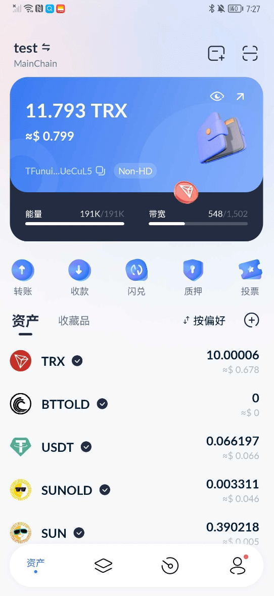
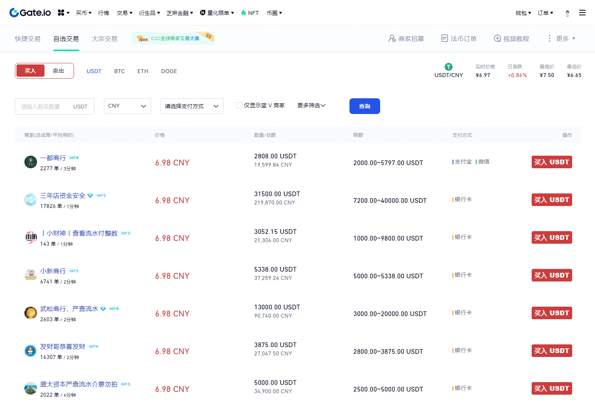
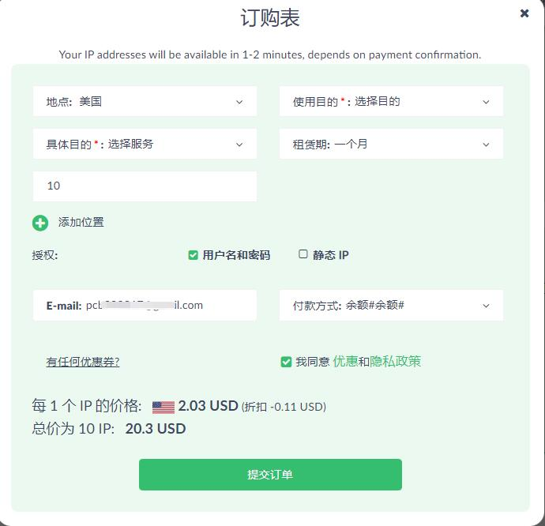
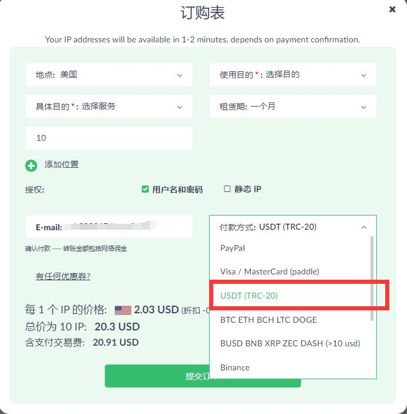
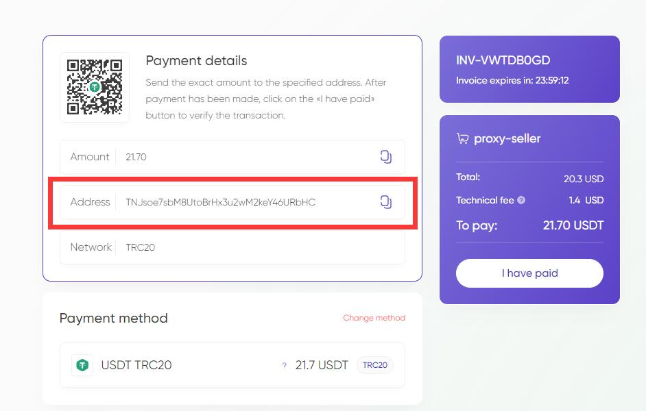

在購買代理IP時，大家最頭疼的就是支付方式，給大家推薦一種非常直接的付款方式就是 USDT (TRC-20)  這種付款方式，非常方便！
這種付款方式，非常方便！
什麼是USDT (TRC-20)？USDT (TRC-20) 是一種加密貨幣，國內也叫TronLink錢包，是 Tether 公司推出的基於 TRON 區塊鏈的代幣。USDT 是一種穩定幣，與美元等法幣掛鉤，其價值在很大程度上保持穩定。 USDT(TRC-20) 是基於 TRON 區塊鏈的一種穩定幣，具有更高的交易速度和更低的交易費用，方便用戶進行加密貨幣交易、儲存和轉移等操作。
TronLink錢包官網： https://www.tronlink.org/cn/
如何在 TronLink 錢包插件中創建新賬戶？（手機APP也適用）
TronLink 提供了高級別的安全保障措施，用戶可以設置密碼、助記詞等安全選項來保護賬戶和資産。TronLink 錢包是一個開源項目，由全球的開髮者共同維護和更新。用戶可以放心使用，並且可以在 GitHub 上查看代碼。TronLink 錢包是一個優秀的數字錢包，爲用戶提供了高度安全性和方便快捷的 TRON 區塊鏈上的數字資産管理和交易體驗。
注意：用TronLink錢包支付，需要消耗TRX,所以錢包裡需要準備一些TRX

購買USDT
選擇並注冊一個受信任的數字貨幣交易平颱。例如：Gate.io、Binance、Coinbase、Kraken等。完成賬戶驗証並添加您的付款方式。常見的付款方式包括銀行轉賬、信用卡或藉記卡等。
| 平颱 | 日額度 | 支持 | 要求 |
|---|---|---|---|
| Gate.io | 1000000 USDT | 中國用戶 | 實名身份認証 |
| 歐易 | 1000000 USDT | 中國用戶 | 實名身份認証 |
轉移或存入您要購買USDT的貨幣，例如人民幣或美元。這通常需要一些時間來確認和處理。有些平颱支持直接使用信用卡支付購買加密貨幣，這可能會更快捷，但可能也需要支付高額的費用。

找到USDT/所需貨幣的交易對，並在平颱上進行購買操作。在購買之前，請仔細查看交易對的價格、流動性和手續費等信息。
一旦您購買了USDT，請將其存儲在安全的數字錢包中，如硬件錢包（例如Ledger Nano S和Trezor）或軟件錢包（如Exodus或Electrum）。
以Proxy-seller付款爲例
1，選擇訂購列表

2，選擇付款方式

3，獲取付款地址

4，填冩接收賬戶，確認交易信息，對交易進行籤名，即可完成轉賬操作，等待鏈上轉賬成功。（詳細參考如何使用 TronLink App 進行轉賬/收款？）